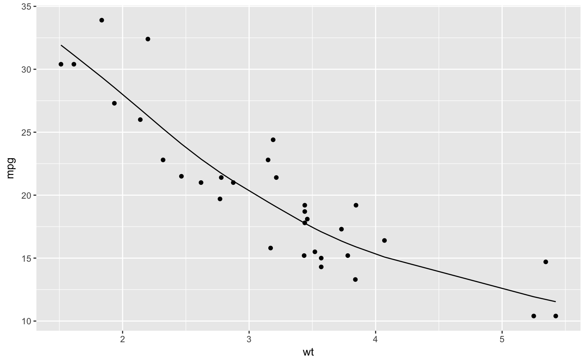

R/stats-smooth.spline-tidiers.R
smooth.spline_tidiers.RdThis combines the original data given to smooth.spline with the fit and residuals
# S3 method for smooth.spline augment(x, data = x$data, ...) # S3 method for smooth.spline glance(x, ...)
| x | a smooth.spline object |
|---|---|
| data | defaults to data used to fit model |
| ... | not used in this method |
augment returns the original data with extra columns:
Fitted values of model
Residuals
smoothing parameter
choice of lambda corresponding to spar
equivalent degrees of freedom
minimized criterion
penalized criterion
cross-validation score
No tidy method is provided for smooth.spline objects.
#> # A tibble: 6 x 13 #> mpg cyl disp hp drat wt qsec vs am gear carb .fitted #> <dbl> <dbl> <dbl> <dbl> <dbl> <dbl> <dbl> <dbl> <dbl> <dbl> <dbl> <dbl> #> 1 21 6 160 110 3.9 2.62 16.5 0 1 4 4 22.9 #> 2 21 6 160 110 3.9 2.88 17.0 0 1 4 4 21.1 #> 3 22.8 4 108 93 3.85 2.32 18.6 1 1 4 1 25.3 #> 4 21.4 6 258 110 3.08 3.22 19.4 1 0 3 1 19.1 #> 5 18.7 8 360 175 3.15 3.44 17.0 0 0 3 2 17.8 #> 6 18.1 6 225 105 2.76 3.46 20.2 1 0 3 1 17.7 #> # ... with 1 more variable: .resid <dbl>#> # A tibble: 6 x 5 #> x y w .fitted .resid #> <dbl> <dbl> <dbl> <dbl> <dbl> #> 1 2.62 21 1 22.9 -1.87 #> 2 2.88 21 1 21.1 -0.117 #> 3 2.32 22.8 1 25.3 -2.48 #> 4 3.22 21.4 1 19.1 2.33 #> 5 3.44 18.7 1 17.8 0.928 #> 6 3.46 18.1 1 17.7 0.437library(ggplot2) ggplot(augment(spl, mtcars), aes(wt, mpg)) + geom_point() + geom_line(aes(y = .fitted))